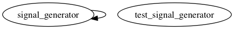

Master index
Index for examples/signal_generator
Dependency Graph for examples/signal_generator

Generated on Tue 10-Mar-2015 12:19:32 by
m2html
© 2005
 Master index
Master index Master index
Master index